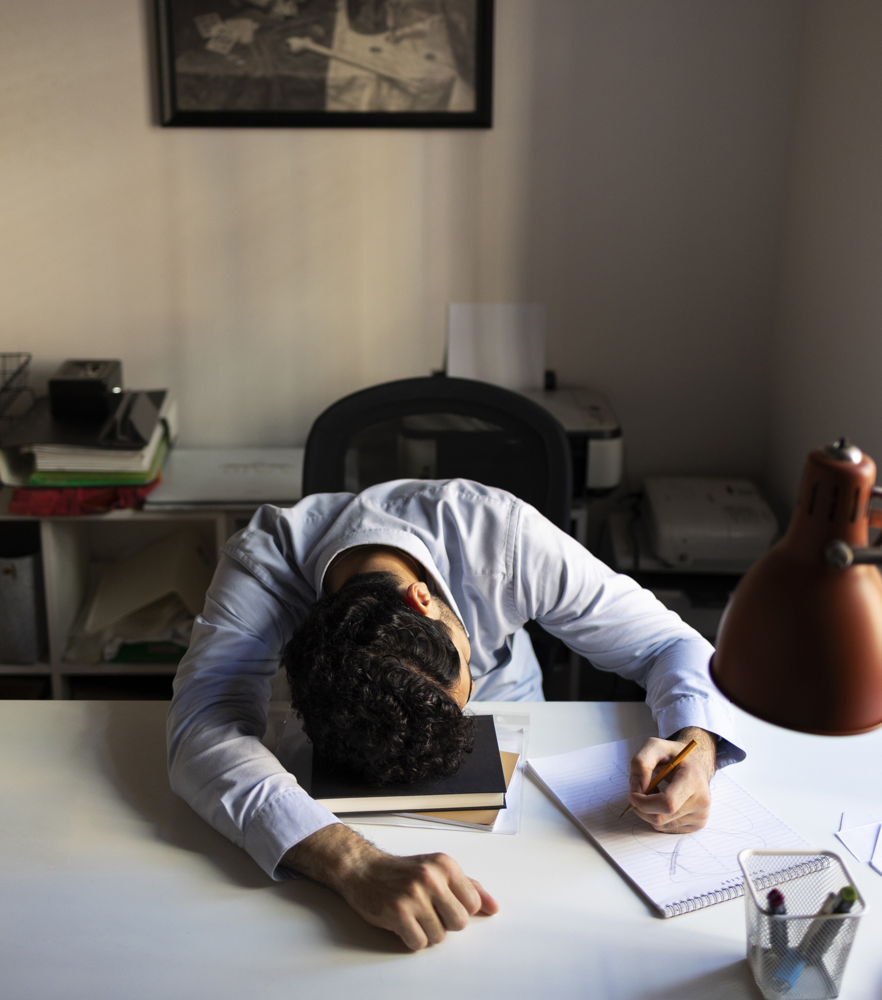

-
O que é a Procrastinação?
A procrastinação - o adiamento voluntário de uma tarefa, mesmo que haja consequências negativas - está presente na vida da maior parte de nós. Ela muitas vezes leva a resultados negativos em termos de desempenho e bem-estar. Isso nos causa stress, sensação de culpa, aumento da ansiedade, perda da produtividade e vergonha.

Procrastinação
Causas da Procrastinação
-
De acordo com estudos, a procrastinação pode acontecer por causas psicológicas ou fisiológicas.

No primeiro caso, o indivíduo pode procrastinar devido a questões mentais, como depressão, ansiedade ou a dificuldade em regular as emoções desagradáveis.
Já quando a causa é fisiológica, o cansaço, sono e má alimentação podem ser os principais motivos para que as tarefas sejam deixadas para depois.
O que torna a procrastinação um problema?
-
É considerado um problema, algo que gera sofrimento ou conflito. Protelar a realização de uma tarefa que precisa de ser concluída pode trazer ansiedade, frustração e stress além da não-produtividade.


-
Estudos mostram que aproximadamente 20% dos adultos hoje são procrastinadores crônicos e em estudantes universitários o número chega a aproximadamente 50%. A procratinação crônica nessas pessoas tem causado problemas emocionais graves, além de perda considerável de desempenho.
Para saber mais sobre procrastinação, indicamos alguns podcasts e vídeos que podem te ajudar:
Para ser direcionado à dicas de como evitar a procratinação de acordo com as suas necessidades, clique:
Em que situações você mais procrastina?
Dicas para Evitar a Procrastinação:
Compreensão e Aceitação
Entenda-se e não se culpe! Procure compreender o porquê você procrastina antes de tentar
resolver o problema.
Com as dicas que passamos, você poderá lidar melhor com a procrastinação.
Porém, se você procrastinar mesmo
assim, não se culpe! Descansar ou fazer algo divertido às
vezes nos revigora e certamente nos faz pessoas mais alegres e produtivas!